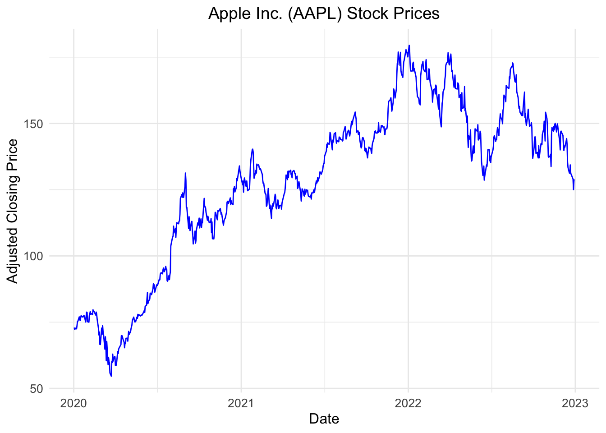

# Install the necessary packages if not already installed
if (!require(tidyquant)) install.packages("tidyquant")
if (!require(dplyr)) install.packages("dplyr")
if (!require(broom)) install.packages("broom")
if (!require(knitr)) install.packages("knitr")
if (!require(ggplot2)) install.packages("ggplot2")
# Load the packages
library(tidyquant)
library(dplyr)
library(broom)
library(knitr)
library(ggplot2)Estimating Beta Coefficients
Course Information
Course: Financial Management
Code: 000347061/000347071
Introduction
In this document, we will estimate the beta coefficient of a stock. The beta coefficient measures the systematic risk of a stock relative to the overall market. We will download stock prices and market index prices using the tidyquant package, compute the returns, and then perform a regression analysis.
Setup
First, we need to install and load the required packages. Ensure you have tidyquant, dplyr, broom, and knitr installed.
Data Collection and Manipulation
Data Download
We will download stock prices for a chosen stock (e.g., Apple Inc., ticker: AAPL) and a market index (e.g., S&P 500, ticker: ^GSPC) from Yahoo Finance during the estimation window 2020-2022.1 You can find any corresponding tickers that you would like to explore from its website.
# Define the tickers for the stock and the market index
stock_ticker <- "AAPL"
market_ticker <- "^GSPC"
# Set the time period for the data
start_date <- "2020-01-01"
end_date <- "2023-01-01"
# Download stock and market data
stock_data <- tq_get(stock_ticker, from = start_date, to = end_date)
market_data <- tq_get(market_ticker, from = start_date, to = end_date)Preview Data
Let’s take a look at the first few rows of the stock data in a pretty format.
# Print the head of the stock data in a pretty format
kable(head(stock_data), caption = "Stock Data: Apple Inc. (AAPL)")| symbol | date | open | high | low | close | volume | adjusted |
|---|---|---|---|---|---|---|---|
| AAPL | 2020-01-02 | 74.0600 | 75.1500 | 73.7975 | 75.0875 | 135480400 | 72.96046 |
| AAPL | 2020-01-03 | 74.2875 | 75.1450 | 74.1250 | 74.3575 | 146322800 | 72.25113 |
| AAPL | 2020-01-06 | 73.4475 | 74.9900 | 73.1875 | 74.9500 | 118387200 | 72.82684 |
| AAPL | 2020-01-07 | 74.9600 | 75.2250 | 74.3700 | 74.5975 | 108872000 | 72.48433 |
| AAPL | 2020-01-08 | 74.2900 | 76.1100 | 74.2900 | 75.7975 | 132079200 | 73.65034 |
| AAPL | 2020-01-09 | 76.8100 | 77.6075 | 76.5500 | 77.4075 | 170108400 | 75.21475 |
Data Preparation
Next, we will prepare the data by calculating daily returns for both the stock and the market index. tq_transmute() is used to manipulate stock data by creating a new variable, stock_return. Stock (or market) returns are calculated as the difference between the current and the past return divided by the past return. Because we are looking at daily data, the past return refers to the return that occurred on the previous trading day. na.omit() is used to drop observations with missing values.
# Calculate daily returns for the stock and the market
stock_returns <- stock_data %>%
tq_transmute(select = adjusted,
mutate_fun = periodReturn,
period = "daily",
col_rename = "stock_return")
market_returns <- market_data %>%
tq_transmute(select = adjusted,
mutate_fun = periodReturn,
period = "daily",
col_rename = "market_return")
# Combine the returns data into one data frame
returns_data <- left_join(stock_returns, market_returns,
by = "date") %>%
na.omit()
# Print the head of the stock data in a pretty format
kable(head(returns_data), caption = "Return Data")| date | stock_return | market_return |
|---|---|---|
| 2020-01-02 | 0.0000000 | 0.0000000 |
| 2020-01-03 | -0.0097221 | -0.0070599 |
| 2020-01-06 | 0.0079682 | 0.0035334 |
| 2020-01-07 | -0.0047031 | -0.0028032 |
| 2020-01-08 | 0.0160863 | 0.0049025 |
| 2020-01-09 | 0.0212411 | 0.0066553 |
Visualize Stock Prices
We will visualize the stock prices of Apple using ggplot2 with a nice theme.
# Plot the stock prices using ggplot2
ggplot(stock_data, aes(x = date, y = adjusted)) +
geom_line(color = "blue") +
labs(title = "Apple Inc. (AAPL) Stock Prices",
x = "Date",
y = "Adjusted Closing Price") +
theme_minimal() +
theme(plot.title = element_text(hjust = 0.5, size = 14),
axis.title = element_text(size = 12),
axis.text = element_text(size = 10))
Regression Analysis
The market model is a statistical model that describes the relationship between the returns of a stock and the returns of the overall market.2 It is a simple linear regression model that can be expressed as follows:
\[ R_i=\alpha+ \beta \times R_m + \epsilon \]
where:
\(R_i\) is the return of the individual stock.
\(\alpha\) (alpha) is the intercept, representing the stock’s return independent of the market’s return.
\(\beta\) (beta) is the slope coefficient, representing the sensitivity of the stock’s return to the market’s return (this is the beta coefficient we are estimating).
\(R_m\) is the return of the market.
\(\epsilon\) (epsilon) is the error term, representing the part of the stock’s return not explained by the market return.
In this section, we will perform a linear regression of the stock returns on the market returns to estimate the beta coefficient. The beta coefficient indicates how much the stock’s return is expected to change in response to a 1% change in the market’s return. A beta greater than 1 indicates that the stock is more volatile than the market, while a beta less than 1 indicates that the stock is less volatile. Theoretically, beta coefficient is considered as a measure of systematic risk of a stock.
# Perform the linear regression
model <- lm(stock_return ~ market_return, data = returns_data)
# Display the summary of the regression model
summary(model)
Call:
lm(formula = stock_return ~ market_return, data = returns_data)
Residuals:
Min 1Q Median 3Q Max
-0.047270 -0.007389 -0.000530 0.005993 0.094905
Coefficients:
Estimate Std. Error t value Pr(>|t|)
(Intercept) 0.0006081 0.0004786 1.271 0.204
market_return 1.1962627 0.0298684 40.051 <2e-16 ***
---
Signif. codes: 0 '***' 0.001 '**' 0.01 '*' 0.05 '.' 0.1 ' ' 1
Residual standard error: 0.01316 on 754 degrees of freedom
Multiple R-squared: 0.6802, Adjusted R-squared: 0.6798
F-statistic: 1604 on 1 and 754 DF, p-value: < 2.2e-16The lm() function in R is used to perform the linear regression, where stock_return is regressed on market_return. The summary of the regression model provides us with the estimated coefficients for alpha and beta, along with statistical measures that help evaluate the model’s fit.
Systematic Risk
The beta coefficient is the slope of the regression line. We can extract it from the regression model.
# Extract the beta coefficient
beta_coefficient <- tidy(model) %>%
filter(term == "market_return") %>%
select(estimate) %>%
pull()
cat("The estimated beta coefficient for",
stock_ticker, "is",
round(beta_coefficient, 2))The estimated beta coefficient for AAPL is 1.2The estimated beta coefficient tells us how sensitive the stock’s return is to the market’s return. For instance, if the beta is 1.2, it means that if the market return increases by 1%, the stock’s return is expected to increase by 1.2%, indicating higher volatility relative to the market.
Idiosyncratic Risk
Idiosyncratic (unsystematic) volatility represents the portion of the stock’s volatility that is not explained by market movements. It can be estimated by taking the standard deviation of the residuals from the market model. The residuals (\(\epsilon\)) represent the differences between the observed stock returns and the returns predicted by the market model.
# Calculate the residuals from the market model
residuals <- resid(model)
# Calculate the standard deviation of the residuals
idiosyncratic_volatility <- sd(residuals)
cat("The estimated idiosyncratic risk for",
stock_ticker, "is",
round(idiosyncratic_volatility, 2))The estimated idiosyncratic risk for AAPL is 0.01Conclusion
In this document, we downloaded stock and market index prices, calculated their daily returns, and performed a regression analysis to estimate the beta coefficient. We also estimated the idiosyncratic volatility by calculating the standard deviation of the residuals from the market model. The beta coefficient helps us understand the stock’s systematic risk in relation to the overall market, while idiosyncratic volatility measures the stock-specific risk not explained by market movements.
Footnotes
There is no unique answer to how to set the estimation window. In this case, we choose to look at the previous three years of daily returns. You can choose any time horizon that suits your analysis. This is based on the implicit assumption that the estimated beta using historical data represents the stock’s riskiness in recent periods.↩︎
You might be wondering why the risk-free rate is ignored in the market model. Indeed, some people would regress \(R_i-R_f\) on \(R_M-R_f\), where the risk-free rate, \(R_f\), is typically measured by Treasury Bill yields. Including the risk-free rate will make beta coefficient slightly different, but the change will be usually minor. For simplicity, you may choose to ignore the risk-free rate.↩︎